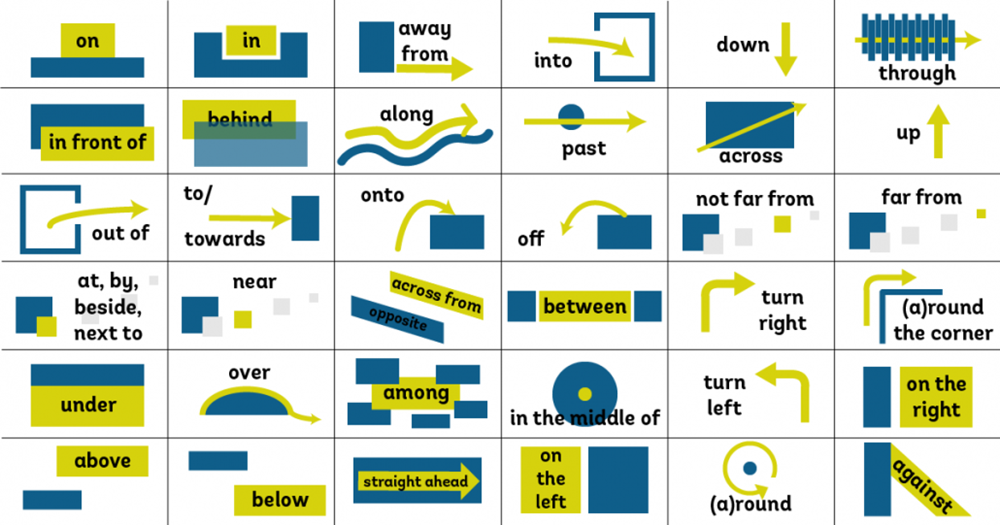
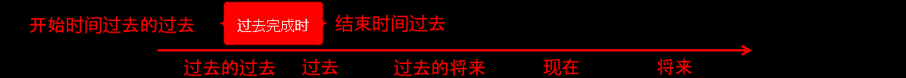

英语语法从入门到高级（放弃）
简单句
陈述句
-
陈述句的两种形式
肯定式：I have money
肯定变否定的方式，助动词（do）后面加否定词（not）
否定式：I don’t (do not) have money
-
陈述句的五种句型
-
主 + 谓（不及物动词才能玩主谓结构）
I run
我 跑
-
主 + 谓 + 宾
I love you
我 爱 你
-
主 + 系 + 表
I am Iron Man
我 是 钢铁侠
系动词 = be动词（那一堆各种各样的“是”am is are等等），加上感官动词（看、听、闻、尝、感觉、变得、似乎、保持、证明），句子中间的谓语动词，如果是系动词后面就是表语。
-
主 + 谓 + 双宾（直接宾语 + 间接宾语）
I give you money
我 给 你 钱
双宾表示，谓语后面加的两个东西，都是动作的对象
我 给 （你 + 钱）
判断技巧：谓语后面两个东西，都能做被动语态主语就是双宾，否则就是宾补
我 给 （你 + 钱） = （你） 被我给了（钱） = （钱） 被我给了（你）
-
主 + 谓 + 宾 + 宾补
They ordered hamburger their lunch
他们 点了 汉堡 他们的午餐
中文语序：他们的午餐他们点了汉堡
判断技巧：谓语后面两个东西，都能做被动语态主语就是双宾，否则就是宾补
他们 点了 （汉堡 + 他们的午餐）
-
疑问句
-
一般疑问句，可以用yes，no回答
陈述句变一般疑问句三种方式之：提前系动词（be动词、感官动词）
主 + 系 + 表 变成 系 + 主 + 表
陈述句：You (are) an idiot.（你是个笨蛋）
一般疑问句：(Are) you an idiot?（你是不是笨蛋？）
回答：Yes，I am/No，I’m not.
陈述句变一般疑问句三种方式之：提前助动词（do、have、shall等）
主 + 谓 + (宾) 变成 助动词 + 主 + 动词原形 + 其他
陈述句：You (have) got light bulbs.（你有灯泡）
一般疑问句：(Have) you got light bulbs?（你有灯泡吗？）
回答：Yes，I have/No，I haven’t.
陈述句变一般疑问句三种方式之：提前情态动词（can、may、will等）
主 + 情态动词 + 动词原形 + 其他 变成 情态动词 + 主 + 动词原形 + 其他
陈述句：You (can) play football.（你会踢足球）
一般疑问句：(Can) you play football?（你会踢足球吗？）
回答：Yes，I can/No，I can’t.
-
特殊疑问句，不可以用yes，no回答，对句子中的某个句子成分提问，用特殊疑问词开头
疑问词
Who 提问人：
Who’s next？（谁下一个？）
Whose 提问所属：
Whose car is this？（这是谁的车？）
Whom 提问宾格 人：
Whom did you choose for our them leader？（你选谁当我们队长？）
What 提问事情属性：
What time is it？（几点了？）
When 提问时间：
When can we start working？（我们什么时候可以开始工作？）
Where 提问地点：
Where is the bathroom？（卫生间在哪里？）
Why 提问原因：
Why did he do it？（他为什么做这个事？）
How 提问方式数量：
How heavy is it？（它有多重？）
How much/many 多少：
How much longer？（有多远？）
Which 提问选择：
Which is your choice？（你选哪个？）
-
选择疑问句，不可以用yes，no回答。选择疑问用or连接，提问两个以上的句子内容供选择
Do you like to play football or basketball？
你喜欢踢球还是打篮球？
回答：I like to play football / I like to play basketball.
-
反义疑问句，可以用yes，no回答。前肯后否，前否后肯
陈述句部分是肯定，疑问句部分用否定句
He is your teacher, isn’t he？(他是你的老师，不是吗？)
陈述句部分是否定，反义疑问句用肯定句
He isn’t your teacher, is he？(他不是你的老师，是吗？)
根据事实回答：Yes, he is/No, he isn’t
祈使句 反义疑问句
用 will you 和 won’t you
Open the door, won’t you?
打开开门，不好吗？
Don’t open the door, will you?
不打开门，好吗？
不管否定肯定，let’s开头结尾就是shall we，Let us开头结尾就是will you
肯定：Let’s go to school, shall we? Let us go outside, will you?
否定：Let’s don’t go out, shall we? Don’t let us go there, will you?
有must 反义疑问句
must表示必须的时候，反义疑问用mustn’t ?/needn’t?
He must study hard at English, mustn’t he？
他必须努力学英语，不是吗？
must表示推测(肯定)的时候，反义疑问用must后动词的否定提问
You must be joking, aren’t you？
你肯定是在开玩笑，不是吗？
感叹句 反义疑问句
全部是，用感叹句陈述，用否定式提问，前肯后否。
What a lovely girl，isn’t she？
多么可爱的女孩，不是吗？
否定词的反义疑问句
常见否定词：hardly，never，seldom，little，few，nowhere，nothing
陈述句有否定词，反义疑问句用肯定提问
He hardly goes to school，does he？
他几乎不去学校，是吗？
复合句的反义疑问句
复合反义疑问句，都是对主句提问与主句相关（除了宾语从句）
She never told you that she had a baby，did she?
她从来没有告诉过你她有一个孩子，是吗？
宾语从句的反义疑问句
全部复合句里，只有宾语从句的反义疑问句，是和从句相关的
I don’t think/believe/imagine/suppose
引导的宾语从句，反义疑问句与从句主语，主谓一致，用肯定提问
I don’t imagine he has got it，has he？
我没有想过他有它，他有吗？
感叹句
-
What 感叹句
what + a\an + 形容词 + 可数名词单数 + 主语 + 谓语
What a beautiful photo it is！
这照片它多美啊！
What + 形容词 + 不可数名词/名词复数 + 主语 + 谓语
What cleanly water it is！
多干净的水啊！
What brilliant dogs they are！
多聪明的狗啊！
How 感叹句
how + 形容词/副词 + 主语 + 谓语
How careful he is！
他多细心啊！
How fast he runs！
他跑得多快啊！
how + 形容词 + a/an + 可数名词单数 + 主语 + 谓语
How cute a dog it is！
它是多么可爱的一只狗啊！
语气词 + 感叹号 的感叹句
Wow！That’s totally awesome！
哇！真是厉害！
Oh！You’re Peter！
哇！你是皮特！
祈使句
-
命令、警告祈使句
Get out！
滚！
Be quiet，please.
请安静
Be careful
小心
请求、祝愿祈使句
Have a good day
祝你有美好的一天
Let me help you
让我帮你
数词
基数词
-
个位数（ 0 ~ 9）
零 一 二 三 四 五 六 七 八 九 zero one two three four five six seven eight nine 十到十九（ 10 ~ 19 ）
十 十一 十二 十三 十四 teneleventwelvethirteenfourteen 十五 十六 十七 十八 十九 fifteen sixteen seventeen eighteen nineteen 红色单独记忆，其他后面加teen十位数，二十到九十（ 20 ~ 90 ）
二十 三十 四十 五十 twenty thirty forty fifty 六十 七十 八十 九十 sixty seventy eighty ninety 后面加ty
二十以上，几十几（ 21 ~ 99 ）
二十 一
twenty one
九十 九
ninety nine
十位用几十，个位用个位
数字表达规律
中文划分规律 10,0000,0000
英文划分规律 1,000,000,000
1、从右往左，每三位加一个逗号，倒数第一个逗号之前是thousand，导数第二个逗号之前是million，倒数第三个逗号之前是billion，倒数第四个逗号之前是trillion
2、逗号之间的百位和十位要加and，数字隔零要加and
1 0 0 0 0 0 0 0 0 0 十亿 亿 千万 百万 十万 万 千 百 十 个 1 0 0 0 0 0 0 0 0 0 billion one hundred million ten million million one hundred thousand ten thousand thousand hundred ten one 一百到九百九十九（ 100 ~ 999 ）
一 百（100）
one hundred
一 百 零 一（101）
one hundred and one
九 百 九十 九（999）
nine hundred and ninety-nine
一千到九千九百九十九（ 1,000 ~ 9,999 ）
一 千（1,000）
one thousand
一 千 零 一（1,001）
one thousand and one
一 千 零 二十（1,020）
one thousand and twenty
九 千 九 百 九十 九（9,999）
nine thousand nine hundred and ninety-nine
一万到一万零九百九十九（10,000~10,999）
一 万（10*1000=10,000）
ten thousand
一 万 零 一（10,001）
ten thousand and one
一 万 零 二十（10,020）
ten thousand and twenty
一 万 零 二 百（10,200）
ten thousand and two hundred
一 万 零 九 百 九十 九（10,999）
ten thousand nine hundred and ninety-nine
一万一千到九万九千九百九十九（11,000~99,999）
一万一千（11*1000=11,000）
eleven thousand
一万一千 零 一（11,001）
eleven thousand and one
一万一千 零 二十（11,020）
eleven thousand and twenty
一万一千 零 二 百（11,200）
eleven thousand two hundred
九万九千九百九十九（99,999）
ninety nine thousand nine hundred and ninety-nine
十万到九十九万九千九百九十九（100,000~999,999）
十万（100*1000=100,000）
one hundred thousand
十万 零 一（100,001）
one hundred thousand and one
十万 零 二十（100,020）
one hundred thousand and twenty
十万 零 二 百（100,200）
one hundred thousand and two hundred
十万 零 二 千 零 一（102,001）
one hundred and two thousand and one
九十九万九千九百九十九（999,999）
nine hundred and ninety-nine thousand nine hundred and ninety-nine
一百万到九千九百九十九万九千九百九十九（1,000,000~99,999,999）
一百万（1,000,000）
one million一百万 零 一（1,000,001）
one million and one一百万 零 一 千（1,001,000）
one million and one thousand一百零一万（1,010,000）
one million and ten thousand九千九百九十九万九千九百九十九（99,999,999）
Ninety-nine million nine hundred and ninety-nine thousand nine hundred and ninety-nine一亿到十亿以及更多（100,000,000 ~ 1,000,000,000 ~ ∞）
一亿（100,000,000）
one hundred million
一亿 零 一（100,000,001）
one hundred million and one
一亿 零 一 千（100,001,000）
one hundred million and one thousand
一亿 零 一 百万（101,000,000）
one hundred and one million
十亿（1,000,000,000）
one billion
三百一十亿零两千九十万零八百八十八（31,020,900,888）
Thirty-one billion twenty million nine hundred thousand eight hundred and eighty-eight
使用特点
-
作数词的时候，前面可以加数词，后面不能加s，two thousand，three thousands（错）
如果数词用作名词的时候，意思是好几…的时候，前面剋加some，many，several这种词或者加数词，后面可以加of
hundreds of（好几百）
five hundreds of（五百左右）
many millions of（数百万）
表示年龄
I’m twenty (我20岁)
表示编号
Room 101=Room one 0 one（101房间）
Bus No.10=Bus Number ten（10路公交车）
表示年代
1940’s=nineteen forty’s (20世纪40年代)
表示年份
2008=twenty thousand and eight
1949=nineteen forty-nine
2019.9.10=Sep.10th,2019=September, tenth, twenty nineteen
表示时刻（中国人描述时间习惯精确到个位分钟，外国人描述时间习惯精确到十位分钟，几分钟一般省略）
6：00=six o’clock=six on the dot（6点整）6：05=six o five=five past six（6点05分，6点过5分）
6：15=six fifteen=a quarter past six（6点15分，6点过一刻）
6：30=six thirty=half past six（6点30分，6点半）
6：45=six forty-five=a quarter to（till） seven（6点45分，7点差一刻）
6：55=six fifty-five=five to（till） seven（6点55分，7点差5分）
时区：time zones 上午：ante meridiem=a.m. 下午：post meridiem=p.m.
24小时制=24-hour clock=military time（北美不太使用24小时制，都是说12小时制加am和pm）21：00=twenty one hours
21：20=twenty one twenty
电话号码直接读数字，北美电话，区号（3位）+用户号（7位）
647-300-2516=six four seven-three double o-two five one six
说价格（经常省略dollars和cents）
nine thirty = nine dollars and thirty cents（9.30$）
ninety-nine ninety-eight = ninety-nine dollars and ninety-eight cent（99.98$）
表示小数（经常省略zero，或者读成o）
0.5 = （zero）point five（零点五）
0.05 =（zero）point o five（零点零五）
两个一样数字，三个一样数字（double，triple）
007 = double o seven（零零七）
boeing 777 = boeing triple seven（波音777）
序数词
-
第几（第零到第九）
第零 第一 第二 第三 第四 zeroth firstsecondthirdfourth 第五 第六 第七 第八 第九 fifthsixth seventh eighth ninth基数词后面加th
第十到第十九
第十 第十一 第十二 第十三 第十四 tenth eleventh twelfththirteenth foureenth 第十五 第十六 第十七 第十八 第十九 fifteenth sixteenth seventeenth eighteenth nineteenth 基数词后面加th
第十几，第二十到第九十
第二十 第三十 第四十 第五十 twentieth thirtieth fortieth fiftieth 第六十 第七十 第八十 第九十 sixtieth seventieth eightieth ninetieth 把基数词结尾的y变成i再加eth
第二十 一
twenty first
第九十 九
ninety ninth
十位用基数词，个位用序数词
第一百及以上
第一百 第一千 第一百万 第十亿 one hundredth one thousandth one millionth one billionth 第十亿五千万零三十一（1,050,000,031st）
one billion fifty million and thirty
first第整数的后面加th，如果不是整数，保留基数词只变个位数
使用特点
-
使用序数词时，一般前面要加定冠词the
I’m in the second room（我在第二个房间）
表示时间日期
The first of September=Sep 1st (九月一日)
表示楼层
The first floor(一楼)
说法 三楼（G3） 二楼（G2） 一楼（G1） 地下一层（B1） 地下二层（B2） 地下三层（B3） 英式 Second floor First floor Ground floor First basement Second basement Third basement 美式 Third floor Second floor First floor First basement Second basement Third basement 序数词表示几分之几，分子大于一，分母有复数形式
序数词前面加a/an表示再一，序数词前面加the表示顺序
We read the book a third times
我们读了三遍这本书
The second door of the room is closed
房间的第二扇门是关的
冠词
定冠词
-
表示这个，特指某个名词，后面跟单数/复数名词，不可数名词
表示上文提过的人和物
This car is popular, but the car isn’t cheap
这车很热门，但是这车不便宜
表示地理位置用
We are based in the Beijing
我们的总部设在北京
表示江河湖海用
The Yellow River
黄河
唯一存在的事物用
The earth
地球
最高级前用
This is the beat cup of coffee
这个最好的一杯咖啡
表示强调时候用
Beijing is the capital of China
北京是中国的首都
乐器之前用
I like to play the piano
我喜欢弹钢琴
不定冠词
-
泛指人和物，表示一个，后面加单数可数名词。辅音发音前面加a，元音发音前面加an
第一次提到的人和物
It’s a cat
这是一只猫
如果是对唯一事物具体情况说明
Their dream is to go on a world tour
他们的梦想是去全世界巡回演出
和名词连用作表语或者同位语，代表职业
I am an engineer
我是一个工程师
表示价格、速度、频率
80 miles an hour
80英里每小时
固定短语会用
Have a good time
玩的开心
零冠词
-
有情况下可以不需要加任何冠词
很广泛的概念
Sichuan dishes are spicy
四川菜很辣
书名、人名
I am reading “Journey to the West”
我正在读西游记
某些城市、国家
China is a big coutry
中国是一个大国
某些山河湖海洲
Asia
亚洲
星球
Mars
火星
语言、球类、学科、棋牌
I have studied English for ten years
我学了十年的英语
三餐、日期、季节（一般不加冠词，如果要特指可以加the）
It’s September 1 th
这是九月一日
注意
-
冠词不能和代词连用
This car is popular（对）
This the car is popular（错）
这车很热门
名词
专有名词、普通名词
-
专有名词（大多数是不可数名词，在某些情况下可以复数使用，或者转换为普通名词，单数/复数使用）：人名、地名、国家、组织、单位、大型活动、著名事件等（首字母大写、如果缩写全部字母大写）
人名：Jack
地名：Beijing
国家：China
组织：FBI
单位：Department of Education
大型活动：Midi Festival
著名事件：Discovery of America
-
专有名词复数使用，专业名词转换普通名词
There are two Jacks in our class
我们班有两个杰克
Millions of Lei Fengs have emerged in China
中国出现了数百万的活雷锋
Hey, Tom, have a Mrs. Carl is waiting for you
嘿，汤姆，有一位卡尔夫人正在等你
-
-
普通名词：专业名词以外的名词
可数名词、不可数名词
-
可数名词（单复数都可以，可以加数词计算）
apple、egg、boy、tree、family、class、police、team等等
-
不可数名词（只能单数，不可以加数词计算）
water、fire、time、hope、knowledge、intelligence等等
具体名词、抽象名词
-
具体名词（看得见摸得着，可数不可数都有）
man、Beijing、book、car、water、fire等等
-
抽象名词（无形的各种事物，大多数是不可数）
time、hope、knowledge、love、anger等等
名词使用注意
-
可数名词
能计数 -
可数名词
能加不定冠词（a/an）和数词（one、two） -
可数名词
可以加定冠词（the） -
不可数名词
不能计数 -
不可数名词
不能加不定冠词（a/an）和数词（one、two） -
不可数名词
可以加定冠词（the）
名词单复数变化
规则变化的名词
大部分名词，直接加
sday - days
以
o,s,x,ch,sh结尾，加eshero - heroes
辅音 +
y，变y为i加escity - cities
元音 +
y，加sboy - boys
f或者fe结尾，变f为v加es（或直接加s）half - halves
roof - roofs
ch结尾发/k/，直接加sstomach - stomachs
辅音 +
oo结尾加sbamboo - bamboos
辅音 +
o，加esecho - echoes
不规则变化的名词
man - men
woman - women
goose - geese
foot - feet
tooth - teeth
child - children
mouse - mice
fish - fish
sheep - sheep
deer - deer
一直是复数的名词
scissors 剪刀
tweezers 镊子
glasses 眼镜
congratulations 祝贺
clothes 衣服
trousers 裤子
amends 赔偿
shenanigans 恶作剧
cahoots 同伙
smithereens 碎片
复合名词的变化
不可数名词结尾，无复数形式
homework，newspaper，greenhouse
man或woman做前缀，前后都要复数
man actor - men actors
两个名词，后面变复数
boy friend - boy friends
可数名词 + 介词（短语），前面变名词复数
sister in law - sisters in law
动词/过去分词 + 副词，加s
stand by - stand bys
名词所有格
's所有格，中英语序一样
单数名词/复数名词非
s结尾，后加's，单数名词s结尾，后加'sJack’s
杰克的
The boss’s car
老板的车
复数名词
s结尾，后加'Boys’
男孩的
用
and连接并列名词的时候表示各自的所有关系，分别加
's，共同所有关系，只在最后一个名词加'sTom’s and Jack’s rooms
汤姆的房间和杰克的房间
Tom and Jack’s room
汤姆和杰克的房间
's所有格，其他常见用法
日程时间后
3 days’ holiday
3天的假期
国家城市后
Beijing’s policy
北京的政策
地方机构后
The airport’s service guide
机场的服务指南
各种单位后面
100 kilogram’s weight
100千克的重量
天体后面
The Jupiter’s aura
木星的光环
of所有格，中英语序相反
-
修饰前面的名词，表两个名词之间的所属关系
The content of the book = The book’s content
这本书的内容
's + of双重所有格
-
of+ 名词's所有格This is a photo of my cat’s
这是我猫的照片
-
of+ 名词性物主代词He is a friend of mine
他是我的朋友
名词主谓一致
什么是主谓一致
-
主语的单复数和谓语的单复数要保证一致
I（单数）am（单数）student
我是学生
They（复数）are（复数）students
他们是学生
-
国家、机构书名等专有名词的复数形式看作整体，谓语用单数
The United States was founded in 1776
美国建立于1776年
“Three Kingdoms” is a good story
三国演义是个好故事
-
many a…或more than one + 名词做主语，谓语用单数
Many a man
issmoking很多男人在抽烟
More than one man
issmoking不止一个男人在抽烟
-
one and a half + 复数名词做主语，谓语用单数
One and a half watermelons
isin the fridge冰箱里有一个半西瓜
-
时间、钱、距离等各种单位看作整体，谓语用单数
Two dollars is no big deal
两美元没什么大不了
Four miles is not a long way
四英里的路不远
-
加减乘除运算中，谓语用单数
Five times five is twenty-five
5乘5是25
One plus one is two
1加1是2
-
each，one，no one，some（any，no，every）+ body（one，thing）作主语或作限定词，谓语用单数
Each student
isin the classroom每个学生都在教室里
Someone student
isin the classroom某个学生在教室里
-
one + of + 复数名词结构中，谓语用单数
One of the students in our school
isfrom the United States我们学校有一名来自美国的学生
-
含有集体概念的名词，根据上下文判断，整体概念谓语用单数，个体概念谓语用复数
The family was in a poor way
整个家庭生活贫困（整体概念，这个家庭）
The family goes to the movies together
这家人一起去看电影（个体概念，这个家的人）
-
含有单复数形式一样的名词作主语，根据上下文判断，谓语用单数还是复数
A fish was back in the water
一条鱼回到了水中
Some fish are still alive
有些鱼还活着
-
a number of + 可数名词复数作主语，泛指许多不一定多少，谓语用复数
the number of + 可数名词复数作主语，特指数量是多少，谓语用单数
A number of scientists are single
许多科学家都是单身
The number of scientists is in the lab is five
实验室里的科学家人数是五人
-
and 或者 both…and…连接两个单数名词作主语，代表复数的概念，大多数情况谓语用复数
He and him families are at the funeral
他和他的家人在参加葬礼
Both China and the United States are big countries
中国和美国都是大国
-
and 连接两个单数词，指同一人或同一事物或同一概念，两个名词共用一个冠词，谓语动词用单数
The Youtuber and traveler is he friend
这位旅行家兼YouTube视频博主是他的朋友
-
and 连接两个单数词，主语前有every，each，no，many a修饰时，谓语用单数
Each day and night is busy
每天都从早忙到晚
-
a/an + 单数名词 + or two做主语，谓语用单数
one or two + 复数名词做主语，谓语用复数
An apple or two
isnot enough一两个苹果是不够的
One or two apples
arenot enough一两个苹果是不够的
-
some of，plenty of，a lot of，lots of，most of，the rest of，all of，half of，part of，分数/百分百+of+名词短语，作主语，谓语动词与of后的名词，保持单复数
Most of the
student wasgone大多数学生都走了
Most of the
students weregone大多数学生都走了
-
few，many，several，all，some后面加名词做主语，谓语用复数
The few words
aredifficult这几句话好难
就近原则（距离谓语近的名词，决定谓语单复数）
-
There be/Here be
There
is one computerand two phones那有一台电脑和两台手机
There
are two computersand one phone那有两台电脑和一台手机
Here
is one appleand two bananas这有一个苹果和两个香蕉
Here
are two applesand one banana这有两个苹果和一个香蕉
-
or，either…or…(二选一)，neither…nor…(两个都不选，选另外一个)，not only…but…(also)(不仅而且，两个都)连接并列作主语
His friends or
he wasdead他的朋友们或者他已经死了
He or his
friends weredead他或者他的朋友们已经死了
Either my brothers or
mother isgoing to the garden我弟弟或者妈妈要去花园
Either mother or my
brothers aregoing to the garden妈妈或者我弟弟要去花园
Neither two apples nor one
banana isvegetable两个苹果和一个香蕉都不是蔬菜
Neither one apple nor two
bananas arevegetables一个苹果和两个香蕉都不是蔬菜
Not only my friends but also my
girlfriend waswrong不仅是我朋友我女朋友也错了
Not only my girlfriend but also my
friends werewrong不仅是我女朋友我朋友也错了
就远原则（距离谓语远的名词，决定谓语单复数）
-
四除（but，except，besides，in addition to）
Peter, but his roommates,isfriendly.皮特人很好，除了他室友
Peter, except his roommates,isfriendly.皮特人很好，除了他室友
Peter, besides his roommates,isfriendly.皮特人很好，除了他室友
Peter, in addition to his roommates,isfriendly.皮特人很好，除了他室友
-
五和（with，along with，together with，combined with，as well as）
Peter, with his roommates,isfriendly.皮特和他室友人都很好
Peter, along with his roommates,isfriendly.皮特和他室友人都很好
Peter, together with his roommates,isfriendly.皮特和他室友人都很好
Peter, combined with his roommates,isfriendly.皮特和他室友人都很好
Peter, as well as his roommates,isfriendly.皮特和他室友人都很好
-
包括（including）
Peter, including his roommates,isfriendly.皮特人很好，包括他室友也很好
-
而不是（rather than，instead of）
Peter, rather than his roommates,isfriendly.皮特人很好而不是他室友
Peter, instead of his roommates,isfriendly.皮特人很好而不是他室友
代词
人称代词
-
主格：在句子里做主语或者表语
They are students
他们是学生
It is you
它是你
-
宾格：做及物动词或者介词之后的宾语
I tell her my name
我告诉她我的名词
I should apologize to her
我应该向她道歉
-
顺序：第二人称（你）-> 第三人称（他） - > 第一人称（我）
You and he
你和他
He an me
他和我
You and he and me are all students
你和他还有我都是学生
-
It的用法天气：
It is cloudy
多云
时间：
It is 6 o’clock
6点整
距离：
It is 5 miles
5英里
环境：
It is desert
沙漠
指上文提过的某物：
I have a cute cat, and it has blue eyes
我有一只猫，它有蓝色的眼睛
不知道性别的人：
She has a cute baby, and it has blue eyes
她有一个可爱的宝宝，宝宝有蓝色的眼睛
已经发生的、正在发生的：
Stop it
停下
打电话分辨人：
Hello, Peter, It’s Jack here
你好，皮特，我是杰克
做形式主语：
It is confident that he will win the match
他有信息赢得比赛
做形式宾语：
I realized it tough to learn ski well
我意识到学好滑雪很难
物主代词
-
形容词性物主代词，做名词的修饰（的），后见加名词
She is my aunt
她是我的姑妈
They are their cars
它们是他们的车
-
名词性物主代词，相当于名词，表示事物又表明所属
You’re not mine
你不是我的
Your house is huge, but ours is rather small
你的房子很大，但是我们的反正很小
-
双重所有格，
of+ 名词性物主代词He is a friend of mine
他是我的朋友
An old friend of mine
一个我的老朋友
反身代词
-
表示什么…自己，做宾语，指一个动作反馈到动作发出者身上
Stop! You might burn yourself
停！你可能会烧到自己
-
表示什么…自己，做同为语，表示强调，解释说明，强调名词或者代词
The book itself is interesting
这本书本身很有趣
人称 + 形容词性 + 名词性 + 反身
-
主格 宾格 形容词性物主代词 名词性物主代词 反身代词 第一人称单数 I me my mine myself 第二人称单数 you you your yours yourself 第三人称单数 he
she
ithim
her
ithis
her
itshis
hers
itshimself
herself
itself第一人称复数 we us our ours ourselves 第二人称复数 you you your yours yourselves 第三人称复数 they them their theirs themselves
指示代词
-
说明近处远处、上下文的人或物
单复数 代词 意思 单 This 这个 较近的某人某物 单 That 那个 较远的某人某物 单 Such 这样 上文提到的某人某物 单 Same 同样 上文提到的相同的某人某物 单 It 这 不清楚的某人某物 复 These 这些 较近的某人某物 复 Those 那些 较远的某人某物
疑问代词
-
用来提出问题的代词，不分单复数，有修饰的名词决定
what，who，whose，whom，which，whatever，whichever，whoever，whomever
不定代词
-
代替或者修饰不确定的人或物，可以做主语、宾语、表语、定语、状语
-
单数：
some，any，each，every，either，nether等
-
复数：
many，few，ones，hoth，others等
-
不可数：
much，little，all等
-
复合：
something，someone，nothing，nobody等
-
-
some和any的区别-
some
肯定句，表示几个、一些、某个
疑问句，表示建议、请求希望
可以修饰可数名词或者不可数名词
I have some problems
我有一些问题
Do you want to get some drinks？
你想喝点什么？
-
any
肯定句，表示任何的
疑问句或者否定句，表示任何一些、任何一个
可以修饰可数名词或者不可数名词
I don’t get any question
我没有遇到任何的问题
Do you have any drinks？
你有任何喝的吗？
-
-
no和none的区别-
no
作定语，表示没有
可以修饰可数名词或者不可数名词
We are no time
我没有时间
I have no answer to these
我没有回答这些
-
none
做主语、宾语、表语
表示没有一个人/物
可以修饰可数名词或者不可数名词
None escape the tomb
万物难逃一死
None of them could escape
他们谁也跑不掉
-
-
all和both的区别-
all
指三者或者以上的人或者物
可以修饰可数名词或者不可数名词
I know all of the five Chinese students
五个中国学生我都认识
-
both
指两个人或者物
可以修饰可数名词
They both spoke together
他们两个齐声说
-
-
every和each的区别-
every
表示每一个
指三个或三个以上的整体中的每一个，侧重于整体
形容词只能做定语
可以修饰单数名词
I eat vegetables every day
我每天都吃蔬菜
-
each
表示每个、各个
指两个或者两个以上中的每一个，强调个别
代词做主语、宾语、定语
Each life is precious
每一个生命都是珍贵的
-
-
either和neither的区别-
either
表示两个中间的任何一个
The woman was either drunk or crazy
这个女人要么喝醉了要么疯了
-
neither
表示either的否定形式，两个都不
I know neither of them
他们两我都不认识
-
-
other和the other和another的区别-
other
表示不同种类的另一个，其余
Do you like other styles？
你喜欢其他的款式吗？
-
another
表示同种类的另一个，又一个
I have another story
我有另一个故事
-
the other
表示两个里面的另一个
Why not try the other box？
为什么不尝试另外一个盒子？
-
-
others和the others的区别-
others
表示其余的人或物，指大部分
Some students are playing football, and others are watching them
有些学生正在踢球，其他学生在看他们踢
-
the others
表示其余的人或物，指全部
John and the others are here
约翰和其他人都在这
-
-
many和much的区别-
many
表示很多，跟可数名词复数连用
I have many friends
我有很多朋友
-
much
表示很多，很不可数名词连用
I have much time
我有很多时间
-
-
something、anything、nothing、everything、somebody、anybody、nobody、everybody、someone、anyone、everyone、no one的区别合成不定代词谓语动词用单数
some- every- 开头的用在肯定句中
any- 开头的用在否定句和疑问句和条件状语从句中
no- 开头的用在否定句中
-thing 结尾指物
-one -body 结尾指人
-
none、no one、nobody的区别no one和nobody指人，后面不能跟of，谓语用单数
none指人指物，后面能跟of，谓语动词单数复数都行
Almost no one believed him
几乎没有人相信他
None of us agreed with him
我们都不同意他的看法
-
a lot of、lots of、a number of、large number of、a great deal of、plenty of的区别a lot of、lots of、plenty of 修饰可数名词复数和不可数名词
a number of、large number of 修饰可数名词复数
a great deal of 修饰不可数名词
A lot of people overlook to keep health
很多人忽视了保持健康
A number of apples are green
一些苹果是绿色的
A great deal of time can rest
大量的时间可以休息
-
few和a few和little和a little的区别few/a few 跟可数名词连用，或者代指可数事物
little/a little 跟不可数名词连用，或者指代不可数事物
否定表达
few 很少几个
little 少到几乎没有
肯定表达
a few 有几个
a little 有一些
I have few apples
我苹果很少
I hava little water
我水很少
I have a few apples
我有几个苹果
I have a little water
我有一点水
-
相互代词
-
表示相互关系的代词
each other、one another
You can test each other
你可以互相考验对方
we’re still attracted to one another
我们依然喜欢彼此
关系代词
-
用来引导定语从句的代词，充当定语从句成分
who 指人，在定语从句作主语
whom 指人，在定语从句作宾语
which 指物，在定语从句作主语或者宾语
that 指人，相当于who和whom
that 指物，相当于which
在定语从句作主语或者宾语
连接代词
-
用引导名词性从句（主语从句、宾语从句、表语从句）
what 什么
who 谁
which 哪个
whose 谁的
介词
介词作用
-
句子中用法
定语The methodofsuccess.（成功的方法）状语She livesinVancouver.（她住在温哥华）表语It isinthe right screw.（它是一个正确的螺丝）宾补He put the cellphoneonthe desk.（他把手机放在桌上）同位语Asa doctor, he is responsible for his patient.（他作为医生，他对他病人负责）
介词分类
-
按结构分
-
单个介词：
at、in、of、after等
-
合成介词：
into、inside、outside等
-
分词介词：
includeing、considering
-
短语介词：
in front of、accord to等
-
-
按词义分
地点、方向、时间、方式、涉及、目的、原因、比较、伴随
介词意思
-
常见介词意思
on in away from into down through in front of behind along past across up out of to,towards onto off not far from far from at,by,beside,next to near across from between turn right comer under over among in the middle of turn left right above below straight ahead left round against 
介词易混
-
地点
on、in、at-
at某个具体位置、加小地点At bus station
在公交车站
At No.12 avenue
在12大街
-
in后面跟大地点In Beijing
在北京
-
on表示在上面，后面加楼层On the 1 th floor
在一楼
-
-
时间
on、in、at-
at后面跟具体时刻，一天中的具体时间点，具体的周和节日At midnight
在午夜
-
on后面跟具体的时间，某年某月某日星期几On Monday September 2 th 2019
在2019年9月2日星期一
-
in后面跟年、月、早晚、季节，一段时间，将来时中表示一段时间之后In Spring
在春天
We will meet in a few days
我们将在几天后见面
-
-
方位
on、in、to-
in是 a 在 b 里面Kunming lies in the southwest of China
昆明位于中国西南部
-
on是 a 和 b 连着Canada lies on the north of American
加拿大位于美国北部
-
to是 a 和 b 不连着Japan lies to the east of China
日本位于中国东部
-
to表示方向to the south
向南边
-
on表示左右on the left
向左边
-
-
时间
after、in-
agter+ 具体时刻或者从句：表示在什么时刻之后，跟一般时态I was always playing football after school
我放学后总是踢足球
-
in+ 一段时间：表示在多久之后，跟将来时态We will study math in a new semester
我们将在新学期学习数学
-
-
时间
since、for-
since+ 具体时刻或者从句：自从什么时候起，一直到现在Since Ford died, that’s all changed
自从福特死了，这一切都变了
-
for+ 一段时间：总共有多长之久The school history for two hundred years
这学校历史长达200年
-
-
in the front of、in front of-
in front of表示在某物范围外的前面There is a tree in front of the school
学校前面有一棵树
-
in the front of表示在某物范围内的前面We sit int the front of the bus
我们坐在公交车的前面
-
-
by、in、with-
by乘坐交通工具、以什么方式I have to go by bus
我不得不坐公交车去
-
in使用某种语言文字He has a speech in English today
他今天发表了一篇英文演讲
-
with使用某种工具方法Blending with Light
光合作用
-
-
through、across、over-
through穿过、通过森林、人群、门等等It passes through the Alataw Pass into Kazakhstan
它通过阿拉山口进入哈萨克斯坦
-
across和over跨越、跨越过河流、街道、围墙I run across the street
我跑过马路
-
-
under、below、beneath-
under在…之下表示某物接触或覆盖某物时We finished the project in under a year
我们在一年内完成了这个项目
-
below某物低于某物、或者表示温度用Below freezing
冰点以下
-
beneath在…之下（抽象概念）能力、地位、期望低The game is beneath my expectations
这游戏低于我的预期
-
-
in、into-
in在…里面I walk in the school
我在学校里走
-
into朝着…里面去I walked into the school
我走进了学校
-
介词搭配
-
介词搭配方式
介词 + 名词：for your car
介词 + 代词：with her
介词 + 动名词：for coming here
介词 + 形容词：from young to old
介词 + 副词：since then
介词 + 动词：of winning
介词 + 不定式：to make him angry
介词 + 从句：at which I fell asleep was very boring
介词 + 数词：over 100 people
介词 + 介词：just before us
形容词
形容词分类
- 按照属性分类
- 属性：（表示人和物具有的属性）可以加 very 修饰 beautiful
- 类别：（表示事物的类别）不可以加 very 修饰 empty、Chinese
- 颜色：浅色前面加 light、pale、bright、深色前面加 dark、deep
- 强调：absolute、utter、total、entire等等
-ing和-ed：某人某事某种情况的特点表示令人感觉 boring- 复合：形容词 + 名词 + ed、形容词/副词 + 过去分词、形容词/副词/名词 + 现在分词、名词 + 形容词
形容词顺序
-
按照种类顺序使用
限定词：a、an、the、my、your、our描绘词：beautiful、boring大小长短：big、small、tall、short形状重量：sphere、fat、skinny状态：cold、wet、rich新旧：new、old、ancient颜色：yellow、red、blue图案：spotted、flowery国籍：Chinese、American、Australian物质：wooden、paper、platinum类别：working、sleeping、classic
-
限描大形状 新颜图 国物类
-
This is a beautiful small wooden table.（这个一个漂亮的小木头桌子）
限定 描述 大小 物质
This is a beautiful big sphere broken old yellow patterned American cupreous classic sculpture.
这个一个漂亮的大球形坏掉的老旧黄色带花纹的美国铜质古典雕塑
-
形容词用法
-
定语、表语、宾补、状语、一类人
-
作定语
The ship is huge
这船好大
-
作表语
The books are interesting
这些书有意思
-
作宾补
The music makes me happy
这个音乐让我开心
-
作状语
I am off duty now, tired and sleepy
我现在下班，又累又困
-
The + 形容词，代表一类人
The old
老人
-
比较级
-
形容词原级、比较级、最高级规则变化
-
单音节词和少数双音节词，比较级加 er 最高级加 est
warm - warmer - warmest
-
元音加上辅音字母结尾，双写辅音字母，比较级加 er 最高级加 est
big - bigger - biggest
-
如果是 e 结尾，比较级加 r 最高级加 st
large - larger - largest
-
如果是 y 结尾，把 y 变成 i，比较级加 er 最高级加 est
happy - happier - happiest
-
如果是多音节词，在单前面加，比较级加 more 最高级加 most
fantastic - more fantastic - most factastic
-
-
形容词原级、比较级、最高级不规则变化
-
原级 比较级 最高级 good
wellbetter best bad
illworse worst many
muchmore most little less least far farther
furtherfarthest
furthestold older
elderoldest
eldest
-
-
比较级的用法
-
原级：
-
没有比较的意思或者原级比较表示和什么一样（as…as/the same as/the identical with）
That is good
那很好
-
-
比较级：
-
能单独使用，前面能加修饰词（a lot、much、rather、a little、even等），与 than 连用比较两者
You should be more patient
你应该更耐心
I swim faster than you
我游的比你快
-
-
最高级：
-
前面要加 the，能单独使用，前面能加修饰词（far、mostly、almost、very、much等），at + 最高级表示处于最什么状态
That is the best choice
那个最好的选择
The car power will at it best
这车的动力将达到最佳状态
-
-
-
比较级特殊结构
-
比较级 and 比较级，表示越来越
faster and faster
越来越快
-
如果是多音节单词，单词只需要写一个，放最后面
more and more fatastic
越来越了不起
-
the 比较级 … the 比较级，表示越怎么越怎么
The richer, the more badass
越有钱越无法无天
-
more than + 名词 = not only（不仅、不只）
We are more than friend
我们不只是朋友
-
more than + 数词 = over（超过）
More than one billion people live in China
超过10亿人生活在中国
-
more than + 形容词 = very（非常）
We are more than interested in search gold
我们对搜索黄金非常感兴趣
-
more … than：第一个意思表示比什么多，第二个意思表示与其什么不如（中英语序相反）
My video is more interesting than your video
我的视频比你的视频有趣多了
You are more give up than painful
你与其痛苦不如放弃
-
no more than：只有，仅仅（等于的意思）
I have no more than four games
我只有四款游戏
-
not more than：不超过（小于的意思）
I have not more than four games
我的游戏不超过四款
-
no more … than = neither … nor 表示既不是也不是
I have no more a PS4 than an XBOX ONE
我既没有PS4也没有XBOX ONE
-
not more … than = not so … as 表示不如
I am not more careful than you
我不如你小心
-
less than 表示少于
We leave in less than a week
我们不到一周就走
-
no less than 表示多达
The total amount is no less than 5000 dollars
总金额多达五千美元
-
not less than 表示不少于
I have not less than four games
我有不少于四款游戏
-
no less … than 表示和什么一样
I am no less careful than you
我和你一样小心
-
形容词易混
-
too much、much too-
too much 表示太多了，修饰名词表示数量
I have too much money
我有太多钱了
-
much too 表示过分，修饰形容词或者副词
That is much too expensive
这贵的过分了
-
-
good、well-
good 用在定语或者表语
It is good（表语）
他很好
-
well用在状语Study well and improve every day（状语）
好好学习天天向上
-
-
nice、fine-
nice 表示令人愉快，指物外表
nice kill
好击杀
-
fine 表示身体好、天气好
I am fine
我没事
-
-
lonely、alone-
lonely 表示孤独的，真的孤独
The lonely student is starving for friendship
那个孤独的学神渴望友情
-
alone 表示独自的，不一定孤独
I live alone
我一个人住
-
-
quick、fast、soon-
quick 和 fast 表示速度快
He is a quick man
他是一个快男
-
soon 表示时间快
come soon
很快到来
-
-
interesting、interested-
interesting：令…感兴趣
The books is very interesting
这些书很有趣
-
interested：对…什么感兴趣
They are interested in English
他们对英语感兴趣
-
-
living、alive、live、lively-
living 表示活着的、存在的、一摸一样的、强烈的
The living polymer is high technology
这高活性聚合物是高科技
-
alive 表示活着的人
John is alive yet
约翰还活着
-
live 表示活着的东西、现在直播的
A live album
一个现场专辑
-
lively 表示活泼的、生动的
Her lively mind
他灵活的头脑
-
副词
副词分类
按照属性分类
时间副词，表示时间或频率
-
表示时间
确定时间 昨天
yesterday今天
today今晚
tonight明天
tomorrow不确定时间 以前
ago以前
before曾经
ever刚刚
just现在
now最近
recently近来
lately后来
later不久
soon最后
last最后
finally -
表示频率
100% 90% 80% 70% 60% 30% 10% 5% 1% 0.1% 0% 频度 总是 常常 通常 经常 频繁 有时 偶尔 很少 几乎不 罕见 从不 always usually generally often frequency sometimes occasionally seldom hardly rarely never 速度 突然
abruptly突然
suddenly立刻
immediately立刻
shortly状态 提早
early仍然
still然后
then已经
already还
yet接下来
next
地点副词，表示地点或位置
-
表示地点：
here、there、home、upstairs、downstairs、anywhere、everywhere、nowhere、somewhere、abroad、elsewhere等等
-
表示位置：
above、below、down、up、out、in、across、back、along、over、round、around、away、near、off、on、inside、outside、past等等
-
Here is the remains of a mosque
这里是一座清真寺的废墟
方式副词，表示行为方式
-
carefully、properly、anxiously、suddenly、normally、fast、calmly、politely、proudly、softly、warmly、slowly、badly等等
Now listen carefully
现在仔细听
程度副词，表示动作程度
-
nearly、rather、very、too、fully、almost、extremely、absolutely、slightly、simply、awfully、deeply、really、perfectly、quite、much等等
It is running very fast.
它跑的很快
疑问副词，引导特殊疑问句
-
how、when、where、why
Where are you going？
你要去哪里？
强调副词，强调形容词或动词
-
completely、perfectly、really、totally、really、mainly、only等等
A really cold day.
很冷的天
连接副词，引导主语从句宾语从句表语从句或者并列结构
-
how、when、where、why、then、however、therefore
The problem is how he can do it.
问题是他如何做这事
You feel all things, then what did you do?
我感觉到了一切，然后你做了什么？
关系副词，引导定语从句
-
when、where、why
I never forget the day when I got the award.
我永远不会忘记，我获奖的那天
句子副词，修饰句子
-
actually、personally、certainly、definitely
Actually, it is more than we need.
实际上，它比我们需要的还要多
副词结构
-
以
ly结尾的副词，大多数时候形容词 +ly等于副词careful——carefully
beautiful——beautifully
important——importantly
-
大部分以
y结尾变成副词，变y为i加lylucky——luckily
busy——busily
dirty——dirtily
-
wards、wise结尾的副词inwards、eastwards、clockwise、likewise
-
本身
ly结尾的形容词，不能变成副词或者长一样ugly、lonely、likely
-
形容词和副词一样的
hard、late、fast、tight
-
本身就是副词，不是形容词变的
so、very、just
-
副词比较级变化，规则跟形容词比较级一样，形容词比较级特殊结构副词一样能用
-
原级：A + 实意动词 + as + 副词原形 + as + B
You play basketball as well as Xukun Cai.
你篮球打的跟蔡徐坤一样好
-
比较级：A + 实意动词 + 副词比较级 + than + B
I know you better than she.
我比她更了解你
-
最高级：A + 实意动词 + the + 副词最高级 + B
Rice grows the best in soil fertile.
水稻在肥沃土地里生长得最好
-
副词用法
-
副词放置位置
-
句首：
Whyare you always late？你为什么总迟到？
-
句中：
She
angrilyclosed the door.她生气地把门关了
-
句尾：
We must work
hard.我们必须努力工作
-
谓语动词和宾语之间不能加副词
I took carefully the baby.（错）
I took the baby carefully.（对）
-
地点副词放句首时候句子要倒装
A school is located there.（没倒装）
There located is a school.（倒装）
-
-
副词可以做的句子成分
-
作状语
Look at the photo carefully.
仔细地看这照片
-
作表语
The meeting is over.
会结束了
-
作定语
The shops around are very cheap.
附近商店东西很便宜
-
作宾补
You come so late.
你来太晚了
-
副词易混
-
too、also、either、nor-
too：肯定句和疑问句句尾，用逗号隔开
Are you Chinese, too?
你也是中国人？
-
also：肯定句的谓语动词之前，系动词之后
You are also Chinese.
你也是中国人
-
either：否定句句尾，用逗号隔开
I am not lucky, either.
我也不幸运
-
nor：放在句首
Nor is Peter anywhere a good man.
皮特也不是个好人
-
-
sometimes、sometime、some times、some time-
sometimes：有时候
Sometimes I go shopping in the mall.
有时候去我大商场购物
-
sometime：未来的某个时候
Peter, I will meet your mother sometime.
皮特,我哪天去见下你的妈妈
-
some times：很多次（一次once、两次twice）
You have treated me quite some times recently. Now it’s my turn.
你已经请我好几次了，这次轮到我请你了
-
some time：一些时间
I should stay home some time.
我应该待在家一段时间
-
-
farther、further-
表示地点距离远时候，两个词都能用，表示更远
-
如果要表示更多、额外，要用further
-
具体的远用farther或者further，抽象的远用further
Can we walk farther/further tomorrow?
我们明天能走远点吗？
See under for further information.
更多内容详见下文
-
-
most、mostly-
most（名词、形容词、副词）表示最、很、十分
The most outlandish ideas.
最奇特的想法
-
mostly（副词）表示主要地、大部分地
The atoms themselves are mostly empty space.
原子本身大部分的空间是空隙
-
动词分类
- 按照属性分类
- 能做谓语
- 实意动词：walk、eat、make等
- 系动词：is、are、look等
- 静态动词：own、cost、consist等
- 动词短语：come out、depend on、pay off等
- 不能做谓语加动词一起可以做谓语
- 助动词：have、do、shall、will、should、can等
- 情态动词：can、may、must、need等
- 能做谓语
实意动词
-
表示动词、及物动词（vt.）和不及物动词（vi.）
-
及物动词（后面加宾语）：
I hate you
-
不及物动词（后面不加宾语）：
I fly
-
及物加不及物动词（根据情况加宾语）
I stop
我停下
I stop working
我停下工作
-
不及物动词没有被动句，因为它后面不能加宾语
-
系动词
- 系动词，引导表语或者表语从句
- be 动词（那一堆各种各样的“是” am is are 等等）
- 感官动词（feel、look、smell、sound、seem）
- 变化动词（get、become、turn、grow）
- 保持动词（keep、stay、remain、rest）
静态动词
- 表示拥有、情感、思想的动词
- 拥有：have、own、want、contain
- 情感：love、hate、want、need
- 思想：know、think、understand、believe
动词短语
-
动词 + 介词或者动词加副词，构成与原来动词不一样的意思
-
动词 + about：think about
动词 + away：pass away
动词 + back：give back
动词 + for：care for
动词 + down：turn down
动词 + at：work at
动词 + from：hear from
动词 + of：think of
动词 + out：carry out
动词 + in：cut in
动词 + into：look into
动词 + over：get over
动词 + to：point to
动词 + up：do up
动词 + with：end with
动词 + through：see through
-
add up to、look down on、make up for、get out of、take pity on、make use of
-
助动词
-
协助主要动词构成谓语的词，没有实际意思，不能单独用，构成时态、语态、否定句、强调句、疑问句
- 代表词have、do、be，如果不翻译意思就是助动词
-
have 做助动词，构成完成时
I have turned off the light.
我已经把灯关了
-
do 做助动词，构成疑问句、否定句、强调句
Do you have kids？
你有孩子吗？
I do not know.
我不知道
Do come with you.
一定要跟你去
-
be 动词做助动词，构成进行时或被动语态
I am watching this video.
我正在看这个视频
情态动词
-
情态动词有含义，要和动词原形在一起构成谓语
-
can/could表示推测、允许、能力You can imagine the story is bad.
你可以想象这个故事不好
You could have been hurt.
你可能会受伤
-
may/might表示推测、允许、请求、祝愿It may rain today.
今天可能下雨
I might be the next lucky dog.
我可能是下一个幸运儿
-
must表示肯定推测、命令It must be her.
这一定是她
You must choose.
你必须选择
-
should/shall/ought to表示推测、需要、征求意见You should be careful.
你要当心
Shall we regain the shore alive?
我们能活着回到岸上吗？
-
Would/will表示将要、请求、意愿Would you like to come with me?
你要跟我一起来吗？
-
be able to能够 -
have to必须 -
had better最好
-
动词形式
- 动词形式将决定时态
- 原形
- 第三人称单数
- 动名词和现在分词
- 过去式和过去分词
动词原形
-
动词原始的样子，很多时候需要用动词原形
-
与助动词或情态动词一起构成谓语, 要用原形
Do you
likeEnglish?你喜欢英语吗?
-
祈使句的谓语动词,要用原形
Don’t move.别动
-
感官动词的宾语与宾补构成逻辑上的主谓关系，表示动作的最后结果或全过程时，作宾补的动词要用原形
I heard a coin
drop.我听到一个硬币掉了下
-
使役动词后的宾语与作宾补的动词构成逻辑上的主谓关系时，动词要用原形
He let Jack
leadthe way.他让杰克在前面带路
-
两个以上的并列不定式用and或or连接起来，动词要用原形
Let’s
goandplayfootball.我们去踢球
-
在 why not… 和 why… 句型中，not 和 why 后直接跟动词原形，构成反问，表示“ 建议、劝告、责备或提醒 ”等。
Why not
usemy bicycle?为什么不用我的自行车呢?
-
动词 help 后是宾 + 宾补，其宾补由动词充当时，动词用原形
I was helped to
cleanthe room by her.他帮我打扫房间
-
do,does,did 与动词原形连用
Do
becareful!一定要当心!
-
不定式作介词 but 和 except 的宾语，当其前有实意动词 do 时，后面的动词不定式要省略 to
Jack had nothing to do but/except
watchTV.杰克除了看电视外无事可做
-
在一些固定的句型中，如 had better（最好）,would rather （宁愿）,would rather…that…（宁愿…而不）等后面的动词要用原形
You had better
havea good rest.你最好好好休息一下
-
第三人称单数
-
一般现在时，主语为第三人称单数（人称代词he she it、单个人名、地名、单数可数名词、不可数名词），谓语要用第三人称单数
It
islooks like a cat.它看起来像只猫
Beijing
isin China.北京在中国
The cat
isLucy’s.这猫是路西的
The water
isvery cold.这水很冷
-
动词变第三人称单数的规律
-
直接动词结尾加 s
ask - asks
-
以 s、x、ch、sh、o 结尾加 es
watch - watches
-
辅音字母加 y 结尾，y 变成 i 加 es
try - tries
-
不规则变化
have - has
be - is
-
动名词和现在分词
-
动名词起着名词的功能，常在句子中充当主语、定语、表语等成分。
-
现在分词来构成进行时态，与助动词 be 搭配构成句子的谓语，现在分词在句中还可以充当定语、表语和状语。
-
词尾加 ing
play - playing
-
词尾是 e 去掉 e 加 ing
ride - riding
-
词尾是 ie 把 ie 变成 y 加 ing
tie - tying
-
辅音加元音加辅音双写辅音加 ing
beg - begging
-
过去式和过去分词
-
过去式单独做谓语，表示过去某个时间发生动作
-
过去分词是动词的非谓语形式，表示被动或者完成
-
加 ed
play - played
-
e 结尾加 d
love - loved
动词 过去式 过去分词 arise arose arisen be was
werebeen babysit babysat babysat beat beat beaten become became become bend bent bent -
动词时态
经典时态表
-
英语的时态一共十六种，最常用的就六种
状态\时间 过去 过去将来 现在 将来 一般 did一般过去时would do
一般过去将来时do一般现在时will do一般将来时进行 was/were doing
过去进行时would be doing
过去将来进行时am/is/are doing现在进行时will be doing
将来进行时完成 had done过去完成时would have done
过去将来完成时have done现在完成时will have done
将来完成时完成进行 had been doing
过去完成进行时would have been doing
过去将来完成进行时have been doing
现在完成进行时will have been doing
将来完成进行时
时间轴时态表
-
过去现在将来大致划分时间概念，具体时态精确划分时间表达
状态\时间 过去的过去 过去 过去的将来 现在 将来 一般 did一般过去时would do
一般过去将来时do一般现在时will do一般将来时进行 was/were doing
过去进行时would be doing
过去将来进行时am/is/are doing现在进行时will be doing
将来进行时had been doing
过去完成进行时have been doing
现在完成进行时would have been doing
过去将来完成进行时will have been doing
将来完成进行时完成 had done过去完成时have done现在完成时would have done
过去将来完成时will have done
将来完成时
现在时态
-
常用时态,一般现在时
-
肯定：主语为第三人称单数，动词第三人称单数，其他动词用原形
-
否定：主语 + do/does + not + 谓语动词原形
-
疑问：疑问词 + do/does + 主语 + 谓语动词原形
-
现在发生的动作：
I love you.
我爱你
-
习惯发生的动作：
I usually drink water in the morning.
我通常早上喝水
-
描述客观的事实：
The earth goes round the sun.
地球围着太阳转
-
电影新闻比赛等的评论报道：
The film is quite different from the novel.
这电影和小说不太一样
-
谈论时间日程：
The aircraft leaves at 9 o’clock.
这飞机在九点离开
-
一般现在时表示将来，主句为将来时态或者表示将来意思时，时间/条件状语从句要用一般现在时表示将来：
I will tell him the news when he comes back.
他回来的时候，我将告诉他这个消息
-
-
常用时态,现在进行时
-
肯定：主语 + be动词 + 动词现在分词
-
否定：主语 + be动词 + not + 动词现在分词
-
疑问：疑问词 + be动词 + 主语 + 动词现在分词
-
表示动作正在进行中，持续进行下去：
You are watching TV.
你正在看电视
-
可以跟 always、constantly、forever、repeatedly 等频度词连用表示抱怨：
My girlfriend is always complaining about ours house.
我女友总是抱怨我们的房子
-
现在进行时表示将来，表示已经安排好的事情：
My dad is taking me to tomorrow class.
我爸明天要带我去上课
-
-
有些动词不能用，现在进行时，要用一般现在时
- 情感：love、hate、prefer、miss
- 归属：have、own、want、belong
- 感官：see、hear、smell、seem
- 思想：think、know、believe、remember
- 测量：fit、contain、consist、analyse
将来时态
-
常用时态，一般将来时
-
肯定：主语 + will + 动词原形
-
否定：主语 + will + not + 动词原形
-
疑问：疑问词 + will + 主语 + 动词原形
-
表示动作还没发生，将来可能发生：
I will buy a new car.
我要买一辆新车
-
-
不常用时态，将来进行时
-
肯定：主语 + will be + 动词现在分词
-
否定：主语 + will be + not + 动词现在分词
-
疑问：疑问词 + will be + 主语 + 动词现在分词
-
表示动作在将来发生，发生以后持续进行：
Alibaba users will be growing.
阿里巴巴的用户将持续增长
-
-
不常用时态，将来完成进行时
-
肯定：主语 + will have been + 动词现在分词
-
否定：主语 + will have been + not + 动词现在分词
-
疑问：疑问词 + will have been + 主语 + 动词现在分词
-
表示动作在现在之后发生，动作在将来的一个时间点完成了一部分，动作仍然要继续发生下去，并且对开始时间点有影响：
The play is coming off in August. By then, the match will have been running for three months.
这个比赛要在八月暂停了，到那个时候，它已经比了三月了
-
-
不常用时态，将来完成时
-
肯定：主语 + will have + 动词过去分词
-
否定：主语 + will have + not + 动词过去分词
-
疑问：疑问词 + will have + 主语 + 动词过去分词
-
表示动作在现在之后发生，动作在将来的一个时间点完成，并且对开始时间点有影响：
I will have reached Beijing.
我将抵达北京
-
过去时态
-
常用时态，一般过去时
-
肯定：主语 + 动词过去分词
-
否定：主语 + did + not + 动词原形
-
疑问：疑问词 + did + 主语 + 动词原形
-
表示动作发生在过去，动作延续不延续不知道：
I learned English.
我学了英语
-
-
常用时态，现在完成时
-
肯定：主语 + have/has + 动词过去分词
-
否定：主语 + have/has + not + 动词过去分词
-
疑问：疑问词 + have/has + 主语 + 动词过去分词
-
表示动作发生在过去，动作在过去已经完成了，对现在有影响：
I have finished my homework.
我已经完成了我的作业
-
可以和 still、yet、already、always 连用
Have you finished your homework yet?
你的作业完成了吗？
-
讨论个人经历：
I have seen her this week.
我这个星期见过她
-
表示动作发生在过去，动作一直延续到现在
-
可以和 before、since、for、already、many times、yet 连用
I have driven a car since 2009.
我从2009年开始开车
-
-
常用时态，过去完成时

-
肯定：主语 + had + 动词过去分词
-
否定：主语 + had + not + 动词过去分词
-
疑问：疑问词 + had + 主语 + 动词过去分词
-
表示动作发生在过去的过去，动作在过去已经完成了，对过去有影响：
I had lived in Nanjing before I moved to Kunming.
我搬到昆明之前我住在南京
-
可以和 after、as soon as、the moment that、until 连用
After she had got up, I cooked breakfast.
她起床后，我做了早餐
-
-
不常用时态，过去完成进行时
-
肯定：主语 + had been + 动词现在分词
-
否定：主语 + had been + not + 动词现在分词
-
疑问：疑问词 + had been + 主语 + 动词现在分词
-
表示动作发生在过去的过去，动作在过去已经完成了一部分，动作仍然要继续发生下去，对过去有影响：
She had been carrying out her plot to be the queen three months earlier.
早在三个月前她就开始了自己的计划想要成为女王
-
-
不常用时态，过去进行时
-
肯定：主语 + was/were + 动词现在分词
-
否定：主语 + was/were + not + 动词现在分词
-
疑问：疑问词 + was/were + 主语 + 动词现在分词
-
表示动作发生在过去，动作持续进行下去：
The UFO was flying over my head last midnight.
昨天半夜不明飞行物从我头上飞过
-
-
不常用时态，现在完成进行时
-
肯定：主语 + have been + 动词现在分词
-
否定：主语 + have been + not + 动词现在分词
-
疑问：疑问词 + have been + 主语 + 动词现在分词
-
表示动作发生在过去，动作持续进行下去，到现在已经完成了一部分，对现在有影响：
I have been working for seven days without a rest.
我已经连续工作七天没休息了
-
-
不常用时态，一般过去将来时
-
肯定：主语 + would + 动词原形
-
否定：主语 + would + not + 动词原形
-
疑问：疑问词 + would + 主语 + 动词原形
-
表示动作发生在过去的将来，如果是人做主语表示意愿：
I would win the match under cruel complete.
我在残酷的比赛中获胜
-
-
不常用时态，过去将来进行时
-
肯定：主语 + would be + 动词现在分词
-
否定：主语 + would be + not + 动词现在分词
-
疑问：疑问词 + would be + 主语 + 动词现在分词
-
表示动作发生在过去的将来，动作一直持续下去：
When I was young, dad said I would be fighting for my future 20 years later.
在我小的时候，我爸跟我说20年后，我要为自己未来而奋斗
-
-
不常用时态，过去将来完成进行时
-
肯定：主语 + would have been + 动词现在分词
-
否定：主语 + would have been + not + 动词现在分词
-
疑问：疑问词 + would have been + 主语 + 动词现在分词
-
表示动作发生在过去的将来之前，动作已经在过去将来完成了一部分，持续到过去将来继续进行，对过去将来这个时间点有影响：
Up to that time, he would have been translating those books．
到那时候，他已经在翻译那些书了
-
-
不常用时态，过去将来完成时
-
肯定：主语 + would have + 动词过去分词
-
否定：主语 + would have + not + 动词过去分词
-
疑问：疑问词 + would have + 主语 + 动词过去分词
-
表示动作发生在过去的将来之前，动作已经在过去将来完成了，对过去将来这个时间点有影响：
I guessed you would have told her something.
我猜你会告诉她一些事情
-
动词语态
主动语态（中文习惯）
-
主语是动作执行者，某人某物做什么
I give you a car.
我给你一辆车
被动语态（英文习惯）
-
主语是动作承受者，某人某物被做了什么
You are given a car by me.
你被我给了一辆车
主动句改被动句
-
主动改被动一共四步
1、把主动句的宾语改成被动句的主语
2、把主动句的谓语动词改成，被动句谓语形式 be + 过去分词，并且人称和单复数要随着新主语变化，时态保持不变
3、把主动句的主语前面加 by，放到谓语之后，变化人称宾格，如果看前面就知道是谁被谁做了什么，或者上下文有交代是谁，可以省略by加主语
4、其他句子成分保持不变
My mother sweeps the floor every day morning
主 + 谓 + 宾 + 其他
我妈每天早上扫这地
I bought some books
主 + 谓 + 宾
我买了一些书
Some books were bought (by me)
一些书被我买了
常用的被动语态形式
-
常用形式需要掌握，不常用的不会也没关系
被动语态 例子 一般现在时 am/is/are + 过去分词 I kill you —— You are killed by me 一般过去时 was/were + 过去分词 I killed you —— You were killed by me 一般将来时 will be + 过去分词 I will kill you —— You will be killed by me 现在进行时 am/is/are + being + 过去分词 I am killing you —— You are being killed by me 过去进行时 was/were + being + 过去分词 I was killing you —— You were being killed by me 现在完成时 have/has + been + 过去分词 I have killed you —— You have been killed by me 过去完成时 had + been + 过去分词 I had killed you —— You had been killed by me 将来完成时 will + have been + 过去分词 I will have killed you —— You will have been killed by me 情态动词 can/could/should/would等 + be + 过去分词 I can kill you —— You can be killed by me
双宾的被动语态形式
-
双宾的被动语态可以改两句
-
把间接宾语改成被动语态的主语，直接宾语留着原位
-
把直接宾语改成被动语态的主语，间接宾语前面加to或for
He gave her some money.
他给了她一些钱
She was given some money（by him）.
她被（他）给了一些钱
Some money was given to her（by him）.
一些钱被（他）给了她
-
宾补的被动语态形式
-
宾补的被动语态只能改一句
-
主动语态的宾语改成主语， 宾补在被动语态中做主语的宾补
We made him manger.
我们选他做经理
He was made manger （by us）.
他被（我们）选做经理
-
动词短语的被动语态形式
-
动词短语要当成一个动词，变动词部分过去分词，其他的不少任何东西
We must take good care of the trees.
我们必须好好照顾这些树
The trees must be take good care of （by us）.
这些树必须被（我们）好好照顾
什么时候用被动语态形式
-
被动语态使用场景
-
不知道动作执行者是谁的情况用被动语态
This diamond was stolen yesterday.
这钻石昨天被偷了
-
强调动作承受者的情况用被动语态
Peter was also grown in this country.
皮特也是在这国家长大的
-
说客观事实可以用被动语态
The iPhone was created by Steven Jobs.
Iphone 是由史蒂芬·乔布斯创造的
-
非谓语动词
非谓语动词分类
-
不做谓语动词，不定式，动名词，（现在过去）分词
The teacher told us to do the homework
老师叫我们做家庭作业
I like swimming.
我喜欢游泳
He sat there and reading a newspaper.
他坐在那看着报纸
We heard about polluted air information.
我们听到了空气被污染的消息
不定式
-
大多数都是 to + 动词不定式，还有些是没有 to 动词不定式
I like to clean.
我喜欢打扫卫生
I can do it.
我能做到
-
什么时候不加 to
-
跟助动词 can, could, might, should, will, may, must, ought to, shall 一起不加 to
I can do it.
-
跟感官动词（see, watch, observe, hear, listen to, feel 等）一起不加 to
I saw him enter the house.
-
跟使役动词（let, make, have, keep, help 等）一起不加 to
Let me try it.
-
跟 why（not）一起不加 to
Why not go out for a walk on a sunny day？
-
跟 know 一起有时候不加 to
-
若 know 为现在式，不定式是限于 to be，这时候 to 不能省略
We knew her to be honest.
-
若 know 为完成式或过去式，结构中不定式用除 to be 外的其他动词不定式，这个时候可以省略 to
We have never known him tell a lie.
-
-
介词 except、but 后不加 to
She tries everything except cook.
-
主语部分带 do 不定式做表语省略 to
All you do now is complete the form.
-
当两个或多个作用相同的不定式并列时，第一个不定式前用 to，其余不定式前的 to 可以省略
He told me to stay there and wait for him.
-
-
什么时候不能省 to
-
当使役动词、感官动词用于被动语态时，要补上在主动语态中省略的 to
She was made to feel happy by the great news.
这个好消息使她感到高兴
The woman was seen to enter a bank.
有人看见这个女人进了一家银行
-
-
时态和语态
分类 时态 主动语态 被动语态 概念 不定式 一般 to do to be done 动作发生在谓语的动作 之后，表示将来目的不定式 完成 to have done to have been done 动作发生在谓语的动作 之前，表示已经完成不定式 进行 to be doing 动作正在进行而且持续，表示 正在进行不定式 完成进行 to have been doing 动作发生在谓语的动作 之前已经完成了一部分，动作正在进行而且持续-
一般主动：
I learn
to playbadminton.我学打羽毛球
-
一般被动：
The cat likes
to be petted.我喜欢被宠爱
-
完成主动：
I learn
to have playedbadminton.我学过打羽毛球
-
完成被动：
The cat likes
to have been pettedby me.这猫喜欢被我宠爱
-
进行主动：
I learn
to be playingbadminton.我正在学打羽毛球
-
完成进行：
I learn
to have been playingbadminton.我一直在学打羽毛球
-
-
不定式做句子成分：主语、宾语、表语、定语、状语、宾补
-
主语：
To learna foreign language is difficult.学一门外语很难
-
it 形式主语：
It is difficult
to learna foreign language.学一门外语很难
-
宾语：
I think
to learna new language difficult.我认为学习一门新语言很困难
-
it 形式宾语：
I think
itdifficultto learna new language.我认为学习一门新语言很困难
-
表语：
His wish is
to bea scientist.他希望可以成为科学家
-
定语：
I have nothing
to say.我没有什么要说的
-
状语：
They went
to seetheir aunt.他们去看他们的姑妈
-
宾补：
The teacher told us
to dohomework.老师叫我们做作业
-
动名词
-
动词加 ing 变成名词
I like swimming.
我喜欢游泳
分类 时态 主动语态 被动语态 概念 动名词 一般 doing being done 动作发生与谓语的动作 之前之后同时都行动名词 完成 having done having been done 动作发生在谓语的动作 之前，表示已经完成-
一般主动：
I like
playingbadminton.我喜欢打羽毛球
-
一般被动：
The cat likes
being pettedby me.这猫喜欢被我宠爱
-
完成主动：
I like
having playedbadminton.我喜欢过打羽毛球
-
完成被动：
The cat likes
having been pettedby me.这猫喜欢被我宠爱
-
-
动名词做句子成分：主语、宾语、表语、定语、宾补
-
主语：
learninga foreign language is difficult.学一门外语很难
-
宾语：
I enjoy
dancing.我喜欢跳舞
-
表语：
His job is
drivinga bus.他的工作是开公交车
-
定语：
This is a
swimmingpool.这个一个游泳池
-
宾补：
I call this
robbingPeter to pay Paul.我称这为拆东墙补西墙
-
现在分词
-
动词加 ing 做现在分词
He is dancing.
他正在跳舞
分类 时态 主动语态 被动语态 概念 现在分词 一般 doing being done 动作正在进行而且持续，表示 正在进行现在分词 完成 having done having been done 动作发生在谓语的动作 之前，表示已经完成-
一般主动：
He is
playingbadminton.他正在打羽毛球
-
一般被动：
The cat likes
being pettedby me.这猫喜欢被我宠爱着
-
完成主动：
He is
having playedbadminton.他打过羽毛球
-
完成被动：
The cat likes
having been pettedby me.这猫喜欢被我宠爱
-
-
现在分词做句子成分：表语、定语、状语、宾补
-
表语：
The story is
interesting.这个故事有趣
-
定语：
The area
being studiedmay be rich in coal.这个正在被研究的地方可能有煤
-
状语：
He sat here and
readinga book.他坐在那看着书
-
宾补：
He saw the thief
stealingsome money from the bank.他看小偷正在从银行里偷钱
-
-
现在分词和动名词区分，看意思是否有正在进行，看句子成分
-
现在分词（
状语、表语、定语、宾补）:a
swimmingboy正在游泳的男孩
He sat here and
readinga book.他坐在那看着书
-
动名词（
主语、宾语、表语、定语、宾补）:a
swimmingsuit泳衣
learninga foreign language is difficult.学一门外语很难
I enjoy
dancing.我喜欢跳舞
-
过去分词
-
动词加 ed 构成过去分词
We heard about polluted air information.
我们听到了空气污染的消息
-
过去分词做句子成分：表语、定语、状语、宾补
-
表语：
He is
interestedin the news.他对这消息感兴趣
-
定语：
The
pollutedriver.被污染的河
-
状语：
Givenmore time, I can do my project better.我再被多给点时间，我的项目会做的更好
-
宾补：
I found my car
stolen.我发现我车被偷了
-
非谓语做独立主格结构
-
什么是独立主格结构
-
前一部分是名词或者代词，后一部分是非谓语动词(动名词、不定式、现在分词、过去分词)或形容词、副词、名词或介词短语，前后两部分具有逻辑主谓关系，修饰整个句子
Lots of homework to do, I have to stay home all day.
有很多作业要做，我只能整天待在家
-
-
不定式的独立主格结构
-
不定式构成的独立主格结构往往表示还未发生的行为或状态，在句中常作原因状语或者条件状语
So many children
to lookafter, the mother has to quit her job.有太多孩子需要照看，这位母亲只能辞职了
-
-
现在分词的独立主格结构
-
现在分词做状语时，逻辑主语必须是主句的主语，如果不一致用现在分词独立主格结构，常作时间、方式、伴随、原因、条件状语
He sat here,
readinga book.他坐在那看着书
The sun is
rising, He sat here reading a book.太阳正在升起，他坐这看着书
-
-
过去分词的独立主格结构
-
过去分词做状语时，过去分词独立主格结构，常作时间、伴随、原因、条件状语
The task
completed, we had a global traveling.任务完成后，我们进行了环球旅行
-
-
时态 + 语态
分类 时态 主动语态 被动语态 概念 不定式 一般 to do to be done 动作发生在谓语的动作 之后，表示将来目的不定式 完成 to have done to have been done 动作发生在谓语的动作 之前，表示已经完成不定式 进行 to be doing 动作正在进行而且持续，表示 正在进行不定式 完成进行 to have been doing 动作发生在谓语的动作 之前已经完成了一部分，动作正在进行而且持续动名词 一般 doing being done 动作发生与谓语的动作 之前之后同时都行动名词 完成 having done having been done 动作发生在谓语的动作 之前，表示已经完成现在分词 一般 doing being done 动作正在进行而且持续，表示 正在进行现在分词 完成 having done having been done 动作发生在谓语的动作 之前，表示已经完成过去分词 一般 done 动作发生在谓语的动作 之前，表示已经完成
名词性从句
名词性从句（名词）
- 用一个句子代替句子里一个名词
- 主语从句
- 宾语从句
- 表语从句
- 同位语从句
名词性从句（主语）
-
用一个句子代替句子里一个名词，做句子主语
-
主语从句引导词
- 连词：that, whether
- 代词：who, whoever, whom, whose, what, whatever, which, whichever
- 副词：when, where, how, why, whenever, wherever, however
-
主语从句经常，用形式主语it放主语位置，真的主语后置
That he will win the match is certain.
It is certain That he will win the match.
他一定会赢得这场比赛的
-
-
主语从句一定不能放句首的情况
-
If/whether 引导的主语从句
It is uncertain 4 whether/if he will come this evening.
不确定他今晚是否会来
-
It is said 开头的结构
It is said that he never laughed.
据说他从来不笑
-
It happens、It occurs 结构
It happens to me that I meet my professor.
我碰巧遇到我的教授
-
It doesn’t matter how/whether 结构
It doesn‘t matter how it happened.
它发生没有什么关系
-
疑问句的时候
Is it sure that you will come back here？
确定你要回到这里吗？
-
-
如何区别 it 主语从句和强调句
-
判断方法：去的掉 it、be、that 之后看句子是否完整
It is
certainthathe will come here.肯定他会来这里
It was
in the hospotalthati saw the Peter.我在医院看见的是皮特
-
-
用一个句子代替句子里的一个名词，做句子主语
-
主语从句多数情况视为第三人称单数，但是连接代词 what 引导的主语从句，后面谓语动词单复数，要根据句子意思决定。
What we need is time.
我们需要的是时间
What we need are good doctors.
我们需要的是好医生
-
-
主语从句的时态，不受主句时态的影响
It is to join a gun club that he will grow-up.
他长大了要参加一个枪械俱乐部
名词性从句（宾语）
-
用一个句子代替句子里一个名词，做句子宾语
-
宾语从句引导词
- 连词：that（that 常可省略），whether，if
- 代词：who，whose，what，which
- 副词：when，where，how，why等
-
当主句是一般现在时或者一般将来时的时候，从句可以任何时态
-
当主句是一般过去时的时候，从句时态必须是过去时范围内的时态
状态\时间 过去的过去 过去 过去的将来 现在 将来 一般 did<br />一般过去时would do<br />一般过去将来时do
一般现在时will do
一般将来时进行 was/were doing<br />过去进行时would be doing<br />过去将来进行时am/is/are doing
现在进行时will be doing
将来进行时进行 had been doing<br />过去完成进行时have been doing<br />现在完成进行时would have been doing<br />过去将来完成进行时will have been doing
将来完成进行时完成 had done<br />过去完成时have done<br />现在完成时would have done<br />过去将来完成时will have done
将来完成时
-
-
宾语从句种类
-
动词的宾语从句
Tellyour son that palying game too much is bad for his eyes.告诉你儿子玩太多游戏对他眼睛不好
-
介词的宾语从句
It all depends
onwhether it will be fine tomorrow.所有的一切都取决于明天的天气是否晴朗
-
形容词的宾语从句
I am
surethat he will come soon.我确信他很快就会来了
-
-
宾语从句的 it 做形式宾语
-
动词 find、feel、consider、make、believe、think 等后面有宾补的时候要用 it 做形式宾语，将 that 宾语从句后置
I find
itinterestingthat talking to you.我觉得同你谈话很有趣
I think
itbestthat you should stay here.我认为你最好住这
-
-
宾语从句的否定转移
-
think、believe、imagine、suppose、guess 等否定时，会转移到从句上
I don’t believe that the car is good.
我相信这车不好
I don’t think that he will come back now.
我认为他现在不会回来
-
-
that 不能省略的时候
-
当主句谓语动词带两个或以上的宾语从句时候，可以省略第一个 that，其他的从句 that 不能省
I realize you are a hero and that everybody accepts your leadership.
我意识到你是个英雄，每个人都接受你的领导
-
宾语从句的主语是非谓语动词或者主语从句，that 不能省
He said that studying English is very hard.
他说学英语非常难
-
主语中的谓语动词是固定搭配时候，that 不能省
Mary has made up her mind that she will study hard for the scholarship.
玛丽已经打定主意，她将努力学习拿奖学金。
-
当宾语从句的主语是 this 或者 that 时候，或者 this 或 that 做主语的定语，that 不能省
He said that this would lead their ancestors to earth.
他说将把他们的祖先带到地球
-
宾语从句放在 in、except、but 等介词后面，that 不能省
He is a good student except that he is a little careless.
他是个好学生，除了有的粗心以外
-
it 做形式宾语时候，that 不能省
We thought it strange that you did not come yesterday.
我们认为很奇怪，你昨天没来
-
that 宾语从句放句首表示强调，that 不能省
That he ever said such a thing, I can not believe.
我不能相信，他曾经说过这样的话
-
主句谓语动词和宾语从句自己有插入语时候，that 不能省
Everyone could see, I believe, that Peter was really afraid.
每个人都可以看到，我相信，彼得很害怕
-
宾语从句的之前或之后紧跟一个状语的时候，that 不能省
He suddenly caught sight of the boy and realized at once that he had seen him before.
他突然发现了这个男孩，立刻意识到自己曾经见过他
-
名词性从句（表语）
-
用一个句子代替句子里一个名词，做句子表语
- 表语从句引导词
- 连词：that, whether, as if, as though
- 代词：who, whose, whom, what ,which
- 副词：when ,where, how, why, because
- 表语从句引导词
-
表语从句种类
-
that 引导：
The reason was that he was late for school.
原因是他上学迟到了
-
whether、as、as if 引导：
The question is whether they will be able to help us.
问题是他们是否能够为我们提供帮助
-
连接代词 who、whom、whose、what、which、等在表语从句做主语和宾语：
The problem is who we can get to replace her.
问题是我们可以代替谁
-
连接副词 where、when、how、why：
This is where they once lived.
这是他们曾经住过的地方
-
连词because：
I think it is because you are doing too much.
我认为这是因为你做太多了
-
一些表示建议劝说命令的名词后面：
My suggestion is that we should start early tomorrow.
我的建议是我们明天早点开始
-
-
if 和 whether
-
If不能引导表语从句，要用whether引导。
-
引导宾语从句时if和whether可以互换，但是介词后面的宾语从句只能用whether
-
位于句首的主语从句只用whether来引导，同位语从句也只能用whether
The question is
ifthey will be able to help us.（错）问题是他们是否能够为我们提供帮助
The question is
whetherthey will be able to help us.（对）问题是他们是否能够为我们提供帮助
-
名词性从句（同位语）
-
用一个句子代替句子里一个名词，做句子同位语，放在名词后面解释名词
- 同位语从句引导词
- 连词：that（不能省）, whether
- 代词：what, who, whom, whose, which等
- 副词：when, where, how, why等
- 同位语从句引导词
-
同位语从句结构
-
主语 + 同位语从句 + 其他
The news that he will come here is real.
他要来这里的消息是真的
-
主语 + 同位语从句
The news that he will come here.
他要来这里的消息
-
-
同位语从句和定语从句的区别
-
先行词的区别：
- 同位语从句前面只能是idea, fact, news, suggestion等有内在含义的名词
- 定语从句前面可以是名词、代词、部分句子，整个句子
The news that he will come here.（同位语从句）
他要来这里的消息
He will come here, which made us very excited.（定语从句）
他会来这里，这让我们非常兴奋
-
性质的区别：
-
同位语从句是对前面的名词做解释，可以翻译成什么什么是什么
The news that our team has won the game
消息是我们队赢了那场比赛
-
定语从句是对前面的东西做修饰，可以翻译成什么样的什么
The news that he told me yesterday
昨天他告诉我的消息
-
-
引导词的区别：
- how, whether, what 可以引导同位语从句，不能引导定语从句
- that 引导同位语从句时候不能省略，引导定语从句经常省略
-
定语从句
-
用一个句子代替句子的定语，修饰先行词（名词或代词）
-
定语从句 = 先行词 + 关系词 + 从句
He is the man that I saw yesterday.
他就是我昨天见的那个人 -
修饰人 who, whose, whom, that
-
修饰物 which, that, whose
-
修饰其他 when, where, why
-
-
who 指人，在定语从句作主语，后面跟动作
The boy
whois playing basketball is from our class.打篮球的男孩是我们班的
-
whom 指人，在定语从句作宾语，可以省略，后面跟完整句子
Peter is a good boy
whomI want to see.皮特是我想见到的好男孩
-
which 指物，在定语从句作主语或者宾语，做宾语可以省略
Football is a game
whichis liked by most boys.足球是大部分男孩都喜欢的游戏
-
that 指人，相当于 who 和 whom，指物相当于 which，在定语从句作主语或者宾语，做宾语可以省略
He is the man
whom/ thatI saw yesterday.
他就是我昨天见的那个人The package
which/thatyou are carrying is about to come unwrapped.你拿的包快散了
-
whose 指人，也指物，在从句中做定语
He has a friend
whosefather is a doctor.他有一个做朋友的父亲是医生
-
指物时候，whose 等于 of which
The car whose engine is broken.
引擎损坏的车
The car engine of which is broken.
引擎损坏的车
-
介词后面只能跟 which
The school (that/which) he once studied in is very famous.
他曾经就读的学校非常有名
The school in which he once studied is very famous.
他曾经就读的学校非常有名
-
定语从句做什么怎么看
-
后面是动作就是做主语
The boy who is playing basketball is from our class.
打篮球的男孩是我们班的
-
后面是完整句子就是做宾语
Peter is a good boy whom I want to see.
皮特是我想见到的好男孩
-
先行词和后面从句翻译要有的字就是做定语
He has a friend whose father is a doctor.
他有一个做朋友的父亲是医生
-
-
when 指时间
The time when we got together finally arrived.
我们在一起的时间终于到了
-
where 指地点
China is the country where I was born.
我出生在中国这个国家
-
why 指原因
The reason why she was moved to China.
之所以她搬到中国
-
关系副词（when、where、why）定语从句可以替换成介词 + which 引导的定语从句
The time when we got together finally arrived.
The time in which we got together finally arrived.
我们在一起的时间终于到了
China is the country where I was born.
China is the country in which I was born.
我出生在中国这个国家
The reason why she was moved to China.
The reason for which she was moved to China.
之所以她搬到中国
-
关系词修饰总结
修饰对象 充当句子成分 关系词 是否能省略关系词 人 主语 that、who 人 宾语 that、whom 能省略 人 定语 whose 物 主语 that、which 物 宾语 that、which 能省略 物 定语 whose、介词 + which 时间 定语 when、介词 + which 地点 定语 where、介词 + which 原因 定语 why、介词 + which -
只能用 that 的定语从句
-
先行词是 everything, anything, nobody, nothing 等代词，先行词被 every, any, all, some, little 等代词修饰
You have everything that you could ever need.
你有你所能需要的一切
-
先行词是序数词或被序数词修饰
She is the first that you were loved.
她是第一个被你爱的人
-
先行词是最高级或被最高级修饰
This is the best car that I have ever seen.
这是我见过最好的车
-
先行词被 the only、the very 修饰
It is the only thing that might work.
只有那样才管用
-
先行词前面有 who、which 等疑问代词
Who is the man that is standing by the gate？
站在门口的人是谁？
-
先行词是人和动物，人和物
We talking about the car and Peter that is so funny.
我们正在聊这车和皮特真的很搞笑
-
-
只能用 which 不能用 that 的定语从句
-
指物时候的引导非限定性定语从句
I have a car, which is a sport car.
我有一辆车，它是一辆跑车
-
关系词之前有介词
The school in which he once studied is very famous.
他曾经就读的学校非常有名
-
先行词为 one、anyone、those
We were the ones who killed her.
我们才是杀害她的凶手
-
先行词是人称代词
Only you who can save her.
只有你能救她
-
-
限制定语从句和非限定定语从句
-
用逗号与主句隔开，只对先行词补充说明，删掉以后不影响主句，主句意思还是完整的，翻译成主句的并列句
-
限定定语从句：
Peter was the only person who is a policeman.
皮特是唯一的警察
-
非限定定语从句：
I have a car, which is a sport car.
我有一辆车，它是一辆跑车
-
状语从句
- 状语从句起副词的作用，一共九种
- 时间
- 地点
- 原因
- 目的
- 结果
- 条件
- 让步
- 比较
- 方式
状语从句（时间）
-
引导词
- 常见引导词 when、as、while、as soon as、before、after、since、not until、until/till
- 特殊引导词 the minute, the moment, the second, every time, the day, the instant, immediately, directly, no sooner than, hardly when, scarcely when, as soon as
- 用 no sooner…than, hardly…when, scarcely…when 引导从句部分倒装
-
例句
No soonerhad I arrived home than it began to rain.
我一到家就开始下雨了Every timeI listen to your advice, I get into trouble.
每当我听取你的建议时，我就会惹上麻烦WhileJohn was watching TV, his wife was cooking.
当约翰看电视时，他的妻子正在做饭
状语从句（地点）
-
引导词
- 常见引导词 where
- 特殊引导词 wherever, anywhere, everywhere
-
例句
Wherethere is no rain, farming is difficult or impossible.
在没有雨水的地方，耕作是困难的或根本不可能的They were good persons.
Wherethey went, there they were warmly welcomed.
他们都是好人。因此他们走到哪里都受到热烈欢迎You should have put the book
whereyou found it.
你应该把书放回原来的地方
状语从句（原因）
-
引导词
- 常见引导词 because、since、as
- 特殊疑问词 seeing that、now、that、in that、considering
-
例句
My friends dislike me
becauseI am handsome and successful.我的朋友都不喜欢我，因为我又英俊又成功
Now thateverybody has come, let is begin our conference.
既然每个人都到了，让我们开始我们的会议吧
状语从句（目的）
-
引导词
- 常用引导词 so that、in order that
- 特殊引导词 lest、in case、for fear that、in the hope that
-
例句
The boss asked the secretary to hurry up with the letters
so thathe could sign them.
老板要求秘书赶快写信件以便他能在上面签字The teacher raised his voice
on purpose thatthe students in the back could hear more clearly.
为了让后面的学生听得更清楚，老师有意地提高了他的声音
状语从句（结果）
-
引导词
- 常用引导词 so…that, such…that
- 特殊引导词 such that, to the degree, to the extent that, to such a degree that
-
例句
It is
such agood chancethatwe must not miss it.
这是一个好机会，千万不能错过它To such adegree was he excitedthathe could not sleep last night.
他激动到这个程度，以至于他昨晚睡不着This news is exciting,
so thathe jumped up.这个消息太令人激动了，以至于他跳了起来
状语从句（条件）
-
引导词
- 常用引导词 if，unless
- 特殊引导词 as/so long as, only if, providing/provided that, suppose that, in case that, on condition that
-
例句
We’ll start our project
ifthe president agrees.
如果总统同意，我们将开始我们的项目You will certainly succeed
so long asyou keep on trying.
只要你继续努力，你一定会成功的
状语从句（让步）
-
引导词
- 常见引导词 though, although, even if, even though
- 特殊引导词 as（必须倒装），while（一般在句首），no matter…，in spite of the fact that，while，whatever，whoever，wherever，however，whichever
-
例句
The old man always enjoys swimming
even thoughthe weather is rough.
老人都很喜欢游泳，即使天气很恶劣No matter howhard he tried, she could not change her mind.
不论他如何努力，她都不会改变她的主意
状语从句（比较）
-
引导词
- 常见引导词 as（同级比较）that（不同程度的比较）
- 特殊疑问词 the more…the more…,just as…,so…,a is to b what/as x is to y, no…more than, not a so much as b
-
例句
The house is three times
as big asours.
这房子是我们的三倍大The moreyou exercise, the healthier you will be.
你运动的越多，你就越健康
状语从句（方式）
-
引导词
- 常见引导词 as，as if，how
- 特殊引导词 the way
-
例句
She behaved
as ifshe were the boss.
她表现得好像她是老板we teach our children
the wayour parents have taught us.
我们用父母教导我们的方式教导我们的孩子
状语从句省略
-
可以省略主语和 be 动词
-
主句和从句的主语一致时候，或者从句主语是 it
-
从句谓语动词是 be 动词
When ( the museum is ) completed , the museum will be open to the public next year .
当博物馆完成，该博物馆将于明年向公众开放He will go to the seaside for his holiday if (it is ) possible.
如果可能，他将去海边度假的话
-
倒装句
-
什么是倒装句
我有事走先
impossible is nothing
-
为什么要用倒装句
- 强调意思
- 句法结构需要
全部倒装
-
将句子的谓语全部置于主语之前
The boss
came in.In camethe boss.老板进来了
部分倒装
-
将句子的谓语一部分（助动词、情态动词、be动词）置于主语之前
-
如果句子的谓语没有助动词或者情态动词，需要添加助动词do、does、did再把它放到主语前面
I
havenever seen a car so fast before.Never before
haveI seen a car so fast.我以前从未见过这么快的车
全部倒装（1种）
-
there be 句型
那有一只猫
There is a cat=A cat is there
那有这道门
There is the door=The door is there
那有两台电脑
There are two computer=Two computer are there
那里没有人
There was nobody=Nobody was there
全部倒装（2种）
-
时间地点副词或介词短语在句首
山上有个庙，庙里有个和尚
There is a temple on the mountain, There is a monk in the temple.
On the mountain is a temple, In the temple lives a monk.
门后是只猫
There is a cat behind the door.
Behind the door is a cat.
全部倒装（3种）
-
so、nor、either
我也是
So do I
他也是
So does he
我也不
Nor do I
我以前也不
Either did I
部分倒装（1种）
-
only 修饰的状语在句首
只有这样了才能有机会交新朋友
Only in this way can you have plenty of chances to make new friends.
直到那个时候我才开始喜欢她
Only then did I begin to like her.
部分倒装（2种）
-
某些否定意义的词在句首
-
例如：never, hardly, little, not, nowhere等
我从来没有见过她
Never before have I seen her.
在哪里都找不到这样高质量的学校
Nowhere can you find a good quality school.
-
部分倒装（3种）
-
Not only…But also, Not only…But…as well, No sooner…that; hardly…when 在句首，只是前半部分倒装
这个可怜的人不仅被捕，而且还被送入监狱
Not only had the poor man been arrested, but he had been sent to prison as well.
不久他就说我们会做这份工作
No sooner had he said that we would do the job.
部分倒装（4种）
-
as 引导的让步状语从句，谓语动词以后部分倒装
今天虽然晴天，但我不出去
Though it is sunny day, I shall not go out.
The sunny day as it is, I shall not go out.
尽管他努力工作，但他仍然贫困潦倒
Though he worked hard, He is still penniless.
Hard as he worked, He is still penniless.
部分倒装（5种）
-
省略 if 的虚拟条件句，were, had, should 等在主语前放在句首
如果我是你，我必须尝试一下
If I were you, I must try it.
Were I you, I must try it.
如有任何疑问，我可以提供帮助
If you had any questions, I can help you.
Had you any questions, I can help you.
部分倒装（6种）
-
so 加形容词或者副词在句首
光速如此快我们几乎无法想象它的速度
So quickly does light travel that we can hardly imagine its speed.
袭击非常突然我们没有时间逃跑
So sudden was the attack that we had no time to escape.
部分倒装（7种）
-
表达祝愿的一些句子
祝你成功
May you succeed.
强调句
-
什么是强调句
-
强调说明句子里的某个部分，表达情感意愿
昨天是他帮了我
It was he that helped me yesterday.
-
-
陈述句强调句型
-
It + is/was + 被强调部分 + that/who/whom/which + 其余部分
昨天皮特在商场把手机掉了
Peter lost his cell phone in the mall yesterday.
It was
Peterthat lost cell phone in the mall yesterday.It was
his cell phonethat Peter lost in the mall yesterday.It was
in the mallthat Peter lost his cell phone yesterday.It was
yesterdaythat Peter lost his cell phone in the mall.
-
-
疑问句强调句型
-
一般疑问句
-
is/was it + 被强调部分 + that/who/whom + 其余部分？
Was it
Peterwho lost cell phone in the mall yesterday？
-
-
特殊疑问句
-
疑问词 + is/was it + that/who/whom + 其余部分？
Wherewas it thatPeter lost his cell phone yesterday？
-
-
-
助动词do/does/did强调谓语动词
I
doagree with you.I
didwork hard this year. -
强调句和主语从句的区别，去掉it be that看句意是否完整
-
强调句
It wasPeterthatlost cell phone in the mall yesterday. -
主语从句
It iscertainthathe will win the match.
-
-
强调句和定语从句的区别，看引导词，强调句翻译不出的字
-
强调句
It was in the mall
thathe lost his cell phone. -
定语从句
It was in the mall
wherehe lost his cell phone.
-
-
强调句和状语从句的区别，看引导词，状语从句是两句话
-
强调句
It was in the morning
thathe woke up. -
状语从句
It was in the morning
whenhe woke up.
-
虚拟语气
-
真实条件句，可能发生的用主将从现
If it rains tomorrow, I will stay at home.
如果明天下雨，我会待在家里
-
虚拟条件句，不可能发生的假设用虚拟语气
If it should rain every day, I could be mad.
如果每天下雨，我可能会疯掉
-
虚拟现在过去将来
条件（从句） 结果（主句） 现在 动词过去式 be动词用were should/would/could/might + 动词原形 过去 had + 过去分词 should/would/could/might + have + 过去分词 将来 should + 动词原形 were to + 动词原形 should/would/could/might + 动词原形 -
从句对现在虚拟
If I were you, I would marry him without any hesitation.
-
从句对过去虚拟
If you had come yesterday, you would have met he.
-
从句对将来虚拟
If it should rain, the crops would be saved.
-
-
省略 if 的虚拟语气 were, had, should 等在主语前放在句首，条件句要部分倒装
如果我是你，我必须尝试一下
If I were you, I must try it.
Were I you, I must try it.
如有任何疑问，我可以提供帮助
If you had any questions, I can help you.
Had you any questions, I can help you.
-
名词性从句的虚拟语气
-
表示希望愿望含义的词时候
I wish I were to become a pilot.
我希望我能成为一名飞行员
-
表示命令建议含义的词时候，should 加动词原形，should 可以省略
The doctor advised that she（should）cares about her health.
医生建议她要关心自己的健康
-
表示宁愿怎么样时候用虚拟语气，would rather 加过去式
You tell them that I would rather died here.
你告诉他们我宁愿死这里
-
It be 加形容词 + that 什么 + should + 动词原形，should 可以省略
It is clear that she（should）try it.
显然她应该试了
-
-
状语从句的虚拟语气
-
表示与将来情况不同：if only＋ 从句主语＋would(could, might)+动词原形
I told her if only she would try again.
我告诉她，如果她会再试一次
-
表示与现在情况不同：if only＋从句主语＋动词过去式
I told her if only I didn’t live in London.
我告诉她，如果我不住在伦敦
-
表达与过去情况不同：if only＋从句主语＋would/could have/had＋过去分词
I told her if only you had come to my birthday party.
我告诉她，你要是来我的生日晚会就好了
-
表示与将来情况不同：as if＋ 从句主语＋would(could, might)+动词原形
I told her as if she would try again.
我告诉她，好像她能再试一次
-
表示与现在情况不同： as if ＋从句主语＋过去式
I told her as if I didn’t live in London.
我告诉她，好像我没在伦敦住过
-
表达与过去情况不同： as if ＋从句主语＋would/could have/had＋过去分词
I told her as if you had come to my birthday party.
我告诉她，你好像来了我的生日晚会
-
-
in case、for fear that、lest 引导的状语从句虚拟语气，should 可以省略
We took a lot of guns with
in case/for fear that/lestit should meet terrorist.为了防备恐怖分子，我们带了很多枪
-
其他虚拟：
-
对现在的虚拟：would+do；
-
对过去的虚拟：would(not) + have done
Without
Alex had done this without consulting her.
亚历克斯这么做事先并没有跟她商量
but for
But for your help, I might have failed.
假如没有你帮忙，我兴许会失败
Otherwise
It was for the police to assess the validity or otherwise of the evidence
应该由警方来判定证据有效与否
-
-
最好用的，最简单的，虚拟语气 without…would + 动词原形
**论述题目：**谈谈你觉得电对现代人生活有什么影响？
**提出观点：**Electricity is necessary for modern life.
电是现代人生活的必须
**举例说明：**We need electricity for our mobile phones and electricity for our computers…
我们手机和电脑需要电…什么什么也需要电
**正反论证：**Without these our life would disintegrate…
如果没有这些我们的生活将崩溃…什么什么也不能用了
总结观点： Therefore, we should realize the importance of electricity.
因此，我们应该认识到电的重要性
-
用虚拟语气，进行正反论证，提升写作论述能力
Research indicates that the characteristics we were born with have much more influence on our personality and development than experiences we have had in our life. Which do you think is the major influence?
研究显示天生特质和后天发展对我们性格有巨大影响，你认为主要的影响是什么？
The traits we inherit from our parents and the situation and experiences that we encounter in life are constantly interacting. It is the interaction of the two that shapes a person’s personality and dictates how that personality develops.
Ifthiswerenot true, wewould beable to predict the behavior and character of a person from the moment they were born.从父母那里继承的特质和我们在生活中遇到的情况和经历是不断相互影响的，正是这两者的相互作用塑造了一个人的性格，并决定了这种性格的发展，如果这不是真的，我们可以在一个人出生时，就预测他的行为和性格
插入语
-
什么是插入语
-
前后逗号隔开，插在主句里面，删掉插入语不影响整体句意，可以插入一个词一个短语，几个词一个句子
I think there are other measures which could be equally,
if not more, effective.我认为其他的措施可能同样有效，甚至更多
-
为什么要用插入语
-
进行补充说明，让句子更加的精确客观，对句子进行强调，进行过渡转折
Cats,
it seems, love to chew up cable.似乎猫喜欢咬电线
The reason,
of course, is that costs have rocketed.原因当然是成本飞涨
Instead of becoming a doctor,
however, he became a successful writer of detective stories.然后，他没有成为医生而是成为了成功的侦探小说作家。
-
插入语插哪
-
句首句中句尾巴都行
Strange, there is nobody in the classroom.
奇怪，教室里没人
Turkey would, of course, be the main dish.
当然，火鸡将是主菜
I prefer to go tomorrow afternoon, at 6 pm.
我打算明天下午去，在下午6点吧
双否
-
一个句子有两个否定因素，句子就是肯定了
Impossible isnothing.没有什么不可能
…not fail to do…
You can not fail to obey it.
你不可能不遵守它
…never fail to do…
The cat never fail to fascinate human beings.
猫总是让人类着迷
can not…too（越…越）
You can not drive too carefully.
你开车越小心越好
no shortage of（不缺）
there is no shortage of good ideas here.
这里不乏好主意
not un（unlike/unusual/unable 等否定前缀）
I decision thinking is not unlike common.
我的决策思维像是一般人
-
怎么写双否
大家很高兴
Everybody was happy.
Nobody was unhappy.
-
万能双否句型
No one could deny the fact that…没人能否认
No one could deny the fact that everybody was happy.
没有人能否认大家都很高兴
There is no denying that…不可否认
There is no denying that everybody was happy.
不可否认大家都很高兴